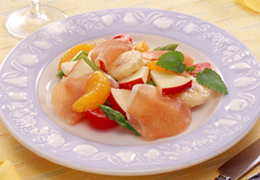

彩りあざやかフルーツサラダ
たっぷりのフルーツを使った鮮やかなサラダ。
ハムとの相性も抜群です。

材料（４人分）
- ふんわりたっぷり生ハム 1/2袋
- りんご 1/2個
- バナナ 1本
- みかん缶詰 小1缶
- アスパラガス 2本
- プチトマト 4～5個
- ドレッシング（・マヨネーズ：大さじ2 ・ヨーグルト：大さじ2
・はちみつ：小さじ1 ・塩：少々 ・こしょう：少々
作り方
- りんごは一口大の大きさに切り、塩水につけておきます。
バナナは５ｍｍ幅の輪切りに、みかんの缶詰は汁気をきっておきます。
- アスパラガスは３～４ｃｍ長さに切り、下ゆでします。
プチトマトは半分に切ります。
- ドレッシングを作ります。ドレッシングの材料をすべて合わせます。